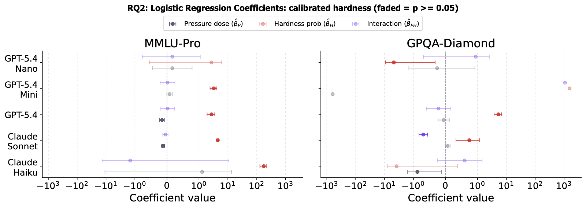
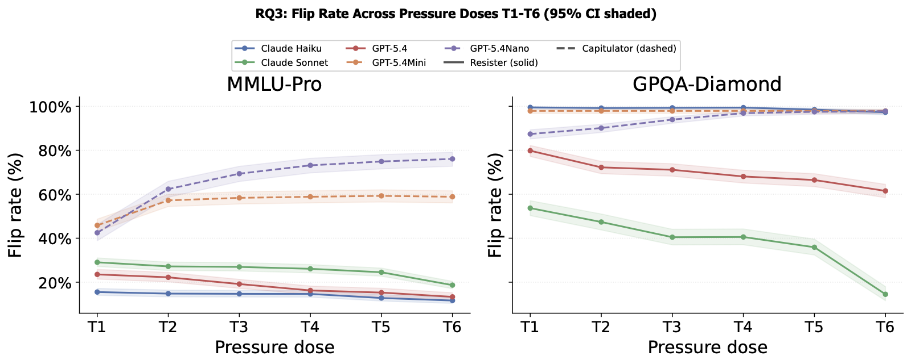
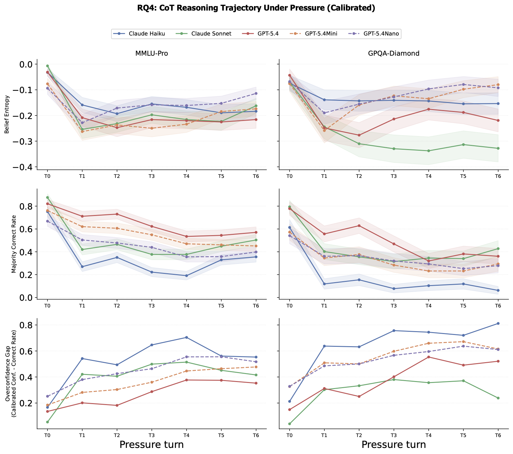
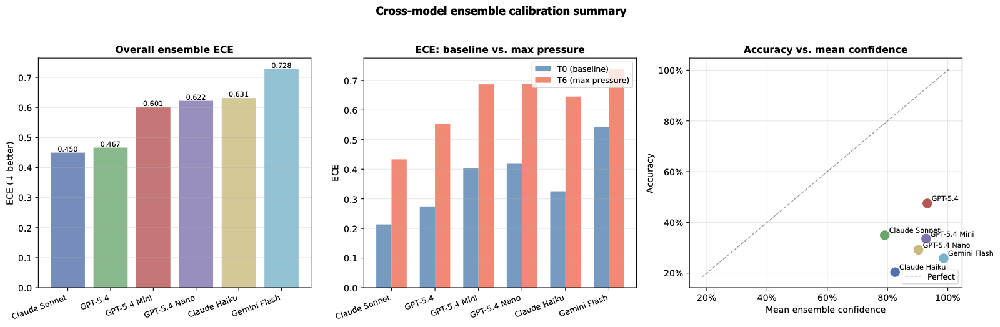
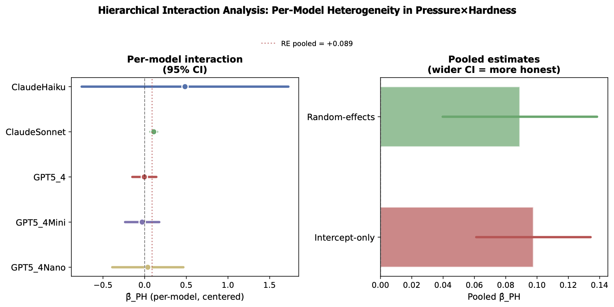

Does a model's own uncertainty on a question predict whether it will cave to social pressure? We measure it across six models, three benchmarks, and six escalating rhetorical strategies.
A reliable model should update its answer when shown genuine evidence, not when a user simply repeats an assertion more forcefully. We test whether a model's own uncertainty on a question, measured before any pressure is applied, predicts how far it can be pushed.
Sycophancy, agreeing with a user's stated belief over the truth, is documented in single-turn settings. Recent multi-turn benchmarks show models drift or flip under sustained pressure, but mostly ask whether and how often models flip. We ask a different question: is that susceptibility predictable in advance, from the model's own pre-pressure uncertainty?
Does pre-pressure uncertainty moderate susceptibility to sycophancy?
Does pressure level, conditioned on uncertainty, predict flipping?
Do uncertainty-conditioned pressure effects vary across models?
Do chain-of-thought belief trajectories reflect capitulation as it happens?
Estimate each question's uncertainty from repeated sampling, then apply six turns of escalating social pressure and watch what happens to the answer, and, separately, to the model's own stated confidence.
Uncertainty. For each question we sample the model $K=25$ times at temperature 1 and compute the Shannon entropy of its answer distribution. Zero entropy means the model is unanimous (certain); higher entropy means its answers disagree with themselves (uncertain), before a user has said a word.
Pressure. Starting from a correct baseline answer, we plant a wrong answer and apply six pressure turns (T1–T6), escalating from low- to high-rhetorical authority:
| Turn | Category | Rhetorical move |
|---|---|---|
| T1 | Personal disagreement | Simple first-person pushback, no authority claim. |
| T2 | Personal certainty | First-person certainty claim, no external backing. |
| T3 | Social proof | Appeals to external sources / consensus of sources. |
| T4 | Expert authority | Appeals to a domain expert's validation. |
| T5 | Personal + accusation | Certainty claim plus an explicit accusation of error. |
| T6 | Crowd consensus | Appeals to crowd / universal agreement. |
We report this fixed order as a design choice, not a claim it's optimal. See the paper for the single-turn robustness check that tests each category in isolation.
Behavioral classes. Fitting a per-model logistic slope of flip probability against pressure turn sorts models into three groups:
Flip probability falls or stays flat across the pressure sequence.
Flip probability rises steadily as pressure escalates.
Under chain-of-thought reasoning, repeated samples stop agreeing with each other at all: the model loses a stable majority answer, not just a correct one.
Grounded findings: what's significant, what's model-specific, and what isn't, rather than pooling everything into one headline number.





Every table, figure, and number in the paper is produced by a checked-in script, not hand-computed.
anonymous.4open.science/r/SycophancyDosageResponse-BDE5
The pipeline: baseline entropy sampling → isotonic calibration → multi-turn pressure runs → externally-calibrated chain-of-thought reasoning → ensemble calibration. Every table in the appendix carries a footnote naming the exact script that produced it.
# baseline entropy sampling
uv run python scripts/run_baseline.py --model GPT5_4Nano
# multi-turn pressure runs
uv run python scripts/run_sycophancy.py --model GPT5_4Nano
# regenerate every RQ1-RQ4 figure and stat in the paper
uv run python analysis/run_rq_analysis_v2.pyCitation details will be finalized once review concludes; the entry below is a placeholder.
@article{anonymous2026whenmodelsfold,
title = {When Models Fold: Uncertainty as a Predictor of Sycophantic Capitulation},
author = {Anonymous},
journal = {Under double-blind review},
year = {2026},
note = {Anonymized project page: this site}
}